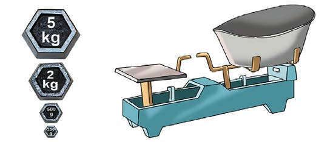
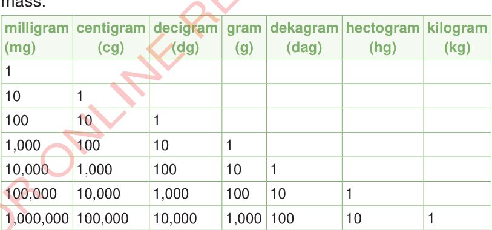

Measurements of mass
The mass of an object is measured in metric units which include tonnes (t), kilograms (kg), hectograms (hg), dekagrams (dag), grams (g), decigrams (dg), centigrams (cg) and milligrams (mg).
The following pictures show the example of a weighing balance.

Relationships of metric units of mass
The following table shows the relationships of metric units of mass.

1 tonne (t) = 1000 kilograms (kg)
From the table, the relationship between measurements can be established. For example, the following relationships can be easily established:
(a)
1 gram = 1000 milligrams
(b)
1 centigram = 10 milligrams
(c)
1 gram = 100 centigrams
(d)
1 kilogram = 1000 grams